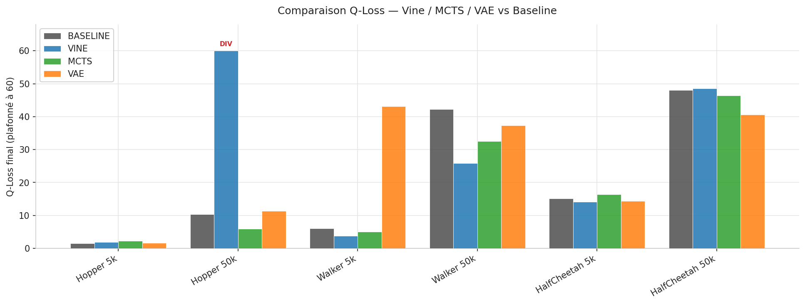
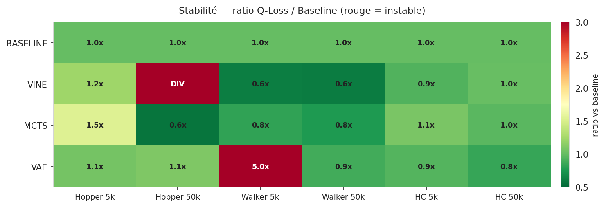
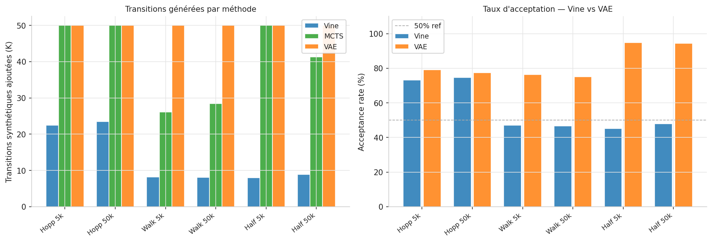
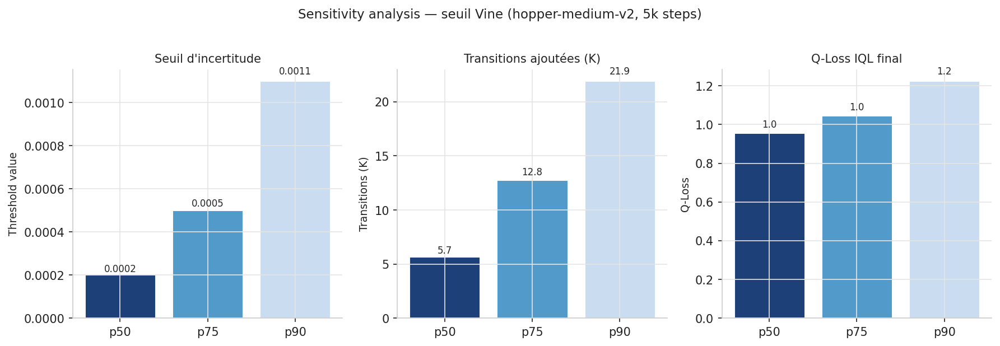

Trajectory Reanalysis for Offline Reinforcement Learning
Comparaison Vine · MCTS · VAE + IQL — D4RL datasets
(hopper · walker2d · halfcheetah) — 5k & 50k steps
Baseline
Vine
MCTS
VAE
Baseline
7.83
score moyen 3 envs
Vine
7.83
⚠ diverge Hopper 50k
MCTS
7.82
✓ zéro divergence
VAE
7.83
meilleur HalfCheetah 50k
Recommandation : MCTS
Seule méthode sans aucune instabilité sur les 6 configurations testées.
Vine diverge sur Hopper 50k (Q-Loss → 5.3M).
VAE explose sur Walker2d 5k (Q-Loss = 43, ×7 vs baseline).
Q-Loss comparatif

Résultats 5k steps
| Env | Baseline | Vine |
MCTS | VAE | Gagnant |
|---|
| Hopper |
1.50 |
1.84 |
2.30 |
1.58 |
BASELINE |
| Walker2d |
6.07 |
3.78 |
5.04 |
43.15 |
VINE |
| HalfCheetah |
15.16 |
14.14 |
16.42 |
14.33 |
VINE |
Résultats 50k steps
⚠ Vine Hopper 50k : Q-Loss → 5 299 436 (divergence complète)
| Env | Baseline | Vine |
MCTS | VAE | Gagnant |
|---|
| Hopper |
10.39 |
DIVERGE ❌ |
5.94 |
11.42 |
MCTS |
| Walker2d |
42.23 |
25.84 |
32.61 |
37.29 |
VINE |
| HalfCheetah |
48.10 |
48.58 |
46.46 |
40.58 |
VAE |
Heatmap stabilité

Transitions générées et taux d'acceptation

Sensitivity analysis — seuil Vine

Observations clés
- MCTS génère le plus de transitions (50K) avec une stabilité parfaite sur tous les envs
- Vine génère moins de transitions (~8–23K) car son filtre est plus strict (acceptance ~47–74%)
- VAE a le meilleur acceptance rate (94%) sur HalfCheetah mais instable sur Walker2d
- Le seuil p90 est optimal pour Vine : meilleur compromis quantité / qualité
- La divergence de Vine à 50k est due à des rewards synthétiques hors distribution → fix : reward clipping